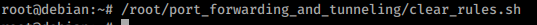
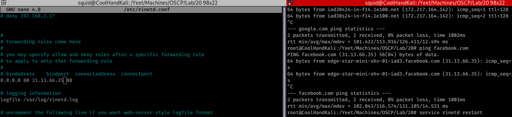
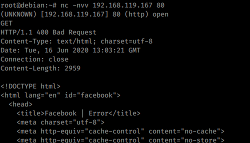

20.1.1.1 Exercises
☐ Connect to your dedicated Linux lab client and run the clear_rules.sh script from /root/port_forwarding_and_tunneling/ as root.

☐ Attempt to replicate the port-forwarding technique covered in the above scenario.

